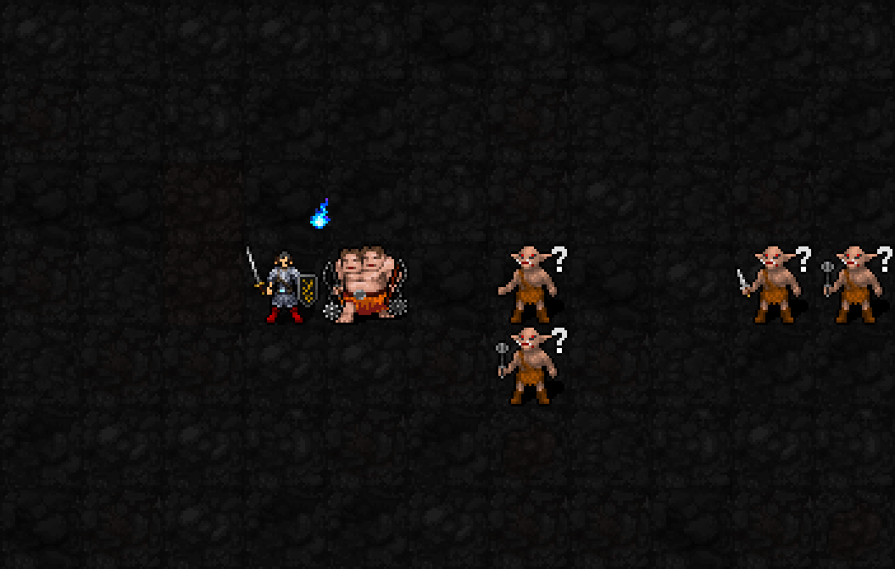

예정 해금:신앙120 / 최소 기도술 제한 없음
발동 MP6·신앙12·1턴 / I12:8.4턴 유지 / 종료 후15턴 재사용 대기

발밑의 작은 푸른 도깨비불 고리는 출동 유지 표시입니다. 옅은5×5 외곽은 자신·아군의 화염 보호와 소화 범위로, 적에게 지속 피해를 주는 장판이 아닙니다. 고리와 불줄기는 몹 아래에 표시합니다.
| 항목 | 효과 |
|---|---|
| 불씨 | 발동 즉시3개,유지 중4턴마다1개 자동충전. 최대3,발동 중 자연감쇠 정지 |
| 화염 저항 | 본인 rF추가+1. 1성 가호와 합계+2단계,장비·종족과 정상상한 적용 |
| 보호 | 본인 중심5×5의 보이는 자신·아군에게 화염 피해를 정상rF 적용 후50% 추가 감소. 물리·냉기·전기·지옥불·용암에는 적용하지 않음 |
| 자동 소화 | 발동 완료 즉시와매1턴,범위의 일반 화염구름 및 자신·아군의 점착화염 제거. 자동소화로 추가 불씨 획득 없음 |
| 강화 방사·범위 제안 | 3성 폭1·길이5 → 출동 중 폭1·길이6 직선관통. 이6칸은이번외형초안의새제안이며아직사용자확정전 |
| 강화 방사·피해 | 3d(6+⌊I/3⌋)+8H,화염·rF적용·AC무시. I12 H0/1/2/3:평균16.5/24.5/32.5/40.5 |
| 강화 방사·비용 | 별도3성권능 사용:MP3·신앙3·1턴·불씨전부소모,행동완료후3턴대기 유지. 자동발사는 아님 |
실제 SDL 렌더러에 출동·불씨표시·강화방사·충전 외형단계를 준비해 찍은 시각 초안입니다. 이번GIF에서 실제MP/신앙소모·보호감소·소화·자동충전·적피해는 실행하지 않았습니다. 불씨1개충전 장면은4턴경과를 실제로 재생한 장면도 아닙니다. 실제 메라는 아직 기존6열기·부채꼴 전투이며,새3불씨/직선/시각콜백은 미구현. 일반실행본su-five01유지.5×5보호범위·강화선1/3/6칸·상태/RNG보존·22신/복원검사통과.
도깨비불 고리 원화:built-in imagegen 생성,56~64px 그림을96px캔버스에배치·약49%불투명도로몹아래표시. 강화불줄기는승인3성의두꺼운불원화를192×32px로통합배치했습니다.